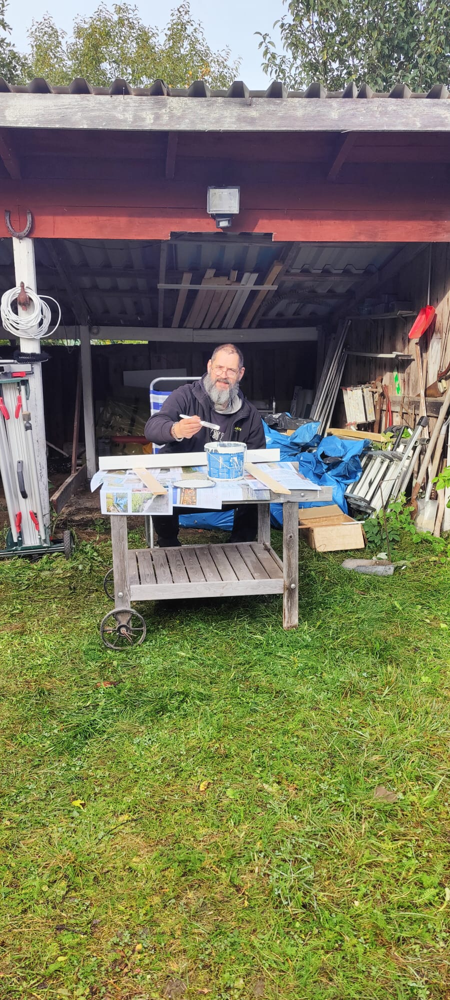
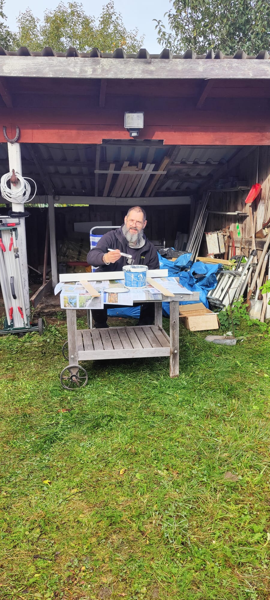
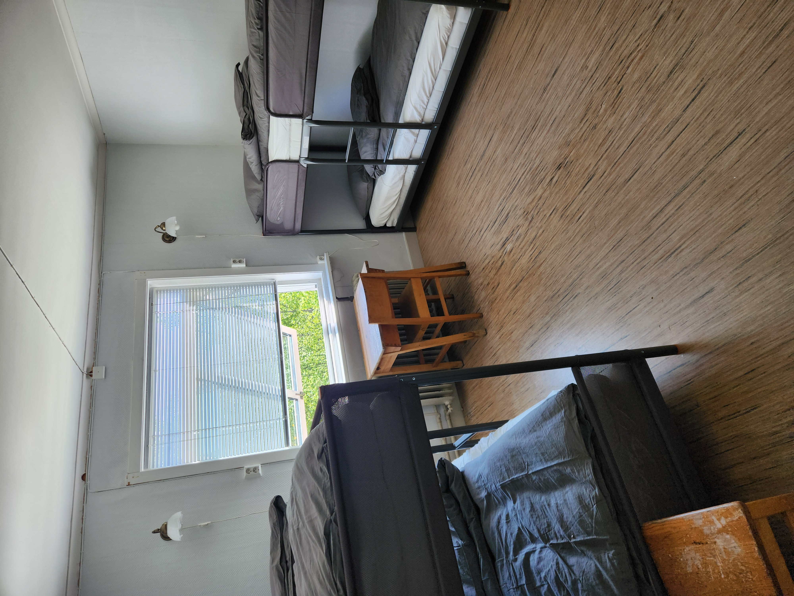
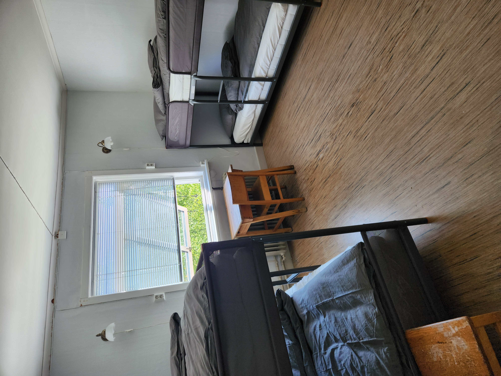
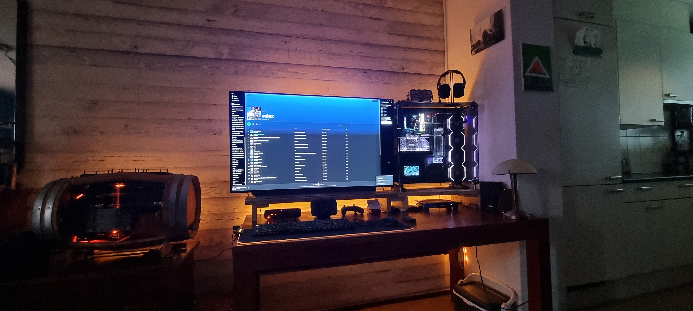
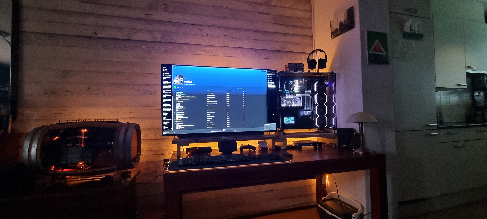

Nico on Point Services
Praktisk hjälp med fastighetsarbete, renoveringar, installationer & datorer
Praktisk hjälp med fastighetsarbete, renoveringar, installationer & datorer

Originally from Amsterdam, the Netherlands, I’ve spent many years working in construction, technical services, and IT. Over the years, I’ve earned a wide range of diplomas and certifications, and worked on numerous projects – including for several (semi) government organizations. This mix of experience has given me a solid understanding of both practical craftsmanship and modern technology.
Now based in beautiful Värmland, Sweden, I combine all those skills to help people with whatever needs fixing, installing, or improving. Whether it’s a small home repair, a tricky technical issue, or a larger renovation project – I handle every task with care, precision, and a no-nonsense attitude.
On the tech side, I’m also passionate about building and repairing custom PCs – from quiet and efficient workstations to high-performance gaming rigs with advanced liquid cooling. I make sure every build runs smoothly and looks great.
I’m a hands-on problem solver who enjoys finding smart and practical solutions, both in homes and for businesses. You can count on professional results, honest communication, and fair rates starting at 450 SEK/hour.
Based in beautiful Värmland, but always on the move across Sweden to help people get things done. Whether it’s hanging a lamp, fixing a leaky tap, assembling furniture, or handling small repairs around the house – I’m your go-to guy for all those everyday jobs that make your home feel complete.
I also take on larger home projects such as renovations, installations, and troubleshooting – always with care, precision, and a no-nonsense attitude.
And again for the tech enthusiasts out there: I design, build, and repair custom PCs, including high-performance gaming rigs with liquid cooling. Every build is tailored to your needs for top-notch performance and a clean, professional look.
You’ll get honest advice, fair prices, and reliable service that’s always on point. So whether you’ve got a quick fix or a big idea in mind – let’s make it happen!

 

 

Many IT issues can be solved quickly and safely remotely — sometimes no travel needed. I help homes and small businesses across Sweden with practical, no-nonsense support that just works.
I use secure, invite-only tools for screen sharing and support, with clear communication at every step. Support available in English, German and Dutch.
Tell me what you need — if on-site is required, I’m based in Värmland and travel across Sweden. Use the contact form below and I’ll get back to you soon.
Friendly, reliable help for your customers — without the overhead. I provide on-demand, remote customer support for all businesses across the world.
I use secure, invite-only tools for screen sharing. Short assignments or ongoing support — your choice.